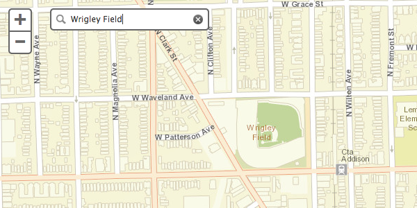
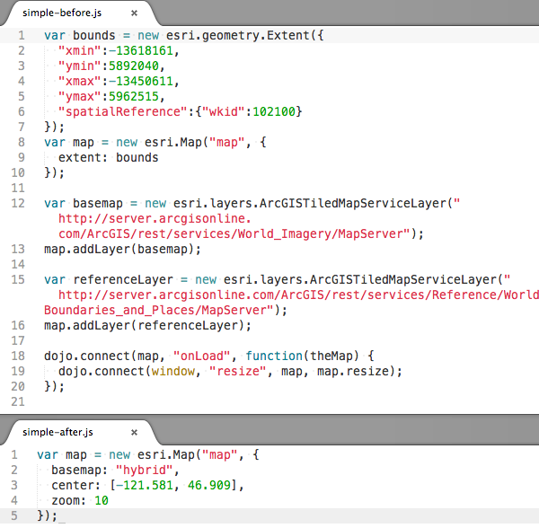

Hide Table of Contents
Hide Table of Contents
 About the API
Getting Started
Working with the API
Graphics and feature layers
Popups and Info Windows
Using the RouteTask
Using the Geoprocessor
Mobile
Recommendations
ArcGIS Server Services
What's New archive
About the API
Getting Started
Working with the API
Graphics and feature layers
Popups and Info Windows
Using the RouteTask
Using the Geoprocessor
Mobile
Recommendations
ArcGIS Server Services
What's New archive
New geocoder widget
Add a geographic search box to your app with a couple of lines of code. The widget defaults to the ArcGIS Online World Geocoding Service but can be customized to use one or more ArcGIS Server geocoding services.

Check out the samples that use this new widget.
New map constructor options:
The map class has new constructor options that can help you get your map set up using less code.
basemap: ArcGIS.com basemap. Possible values: "streets", "satellite", "hybrid", "topo", "gray", "oceans", "national-geographic" or "osm".center: Array of two coordinates (longitude, latitude) or an esri.geometry.Point.zoom: Starting zoom level for the map.minZoom: Smallest scale zoom level for the map.maxZoom: Largest scale zoom level for the map.
The map now auto-resizes so it is no longer necessary to set up an event listener for resize events on the map's container to call map.resize when a map's container resizes.
Below is a comparision of pre-3.3 code and equivalent 3.3 code. 
Simple basemap switching
Two new map methods, getBasemap and setBasemap, make switching basemaps easy. setBasemap accepts one of the strings mentioned above that corresponds to an ArcGIS.com basemap. If map.options.basemap was used to initially set the basemap, or the map's basemap was set with setBasemap, getBasemap will return the string that corresponds to the map's current basemap.
Small map zoom control by default
The map zoom controls now default to a "+" and "–" instead of a slider. The slider is available by passing sliderStyle: "large" to the map's via the constructor options object.
Use a graphics layer or a feature layer as the only layer in a map
The map no longer requires a tiled or dynamic service to be the first type of layer added to the map. View the new Feature Layer in any projection sample or the gas prices by state example to see this in action.
Improved Handling of Latitude and Longitude Coordinates
esri.geometry objects created without a spatial reference are assumed to be geographic and default to a spatial reference of WGS84 (wkid 4326). Instances of esri.geometry.Point have two new methods: getLatitude and getLongitude which return latitude or longitude if the point has geographic or web mercator coordinates. Otherwise, these methods return undefined. The map also has a geographicExtent property when the map is in geographic coordinates or web mercator.
Enhancements to the drawing tools
The draw toolbar's rectangle, triangle, circle and ellipse tools support click + drag to define the size of each shape. The toolbar now also includes options to draw arrows in specific directions (up, down, left and right). The new options are shown in the drawing tools sample.
Additional functionality
- New
redrawmethod for feature layers that redraws features without going back to the service. - Pass a function instead of an attribute field name to a class breaks or unique value renderer to calculate values used to renderer data. See the US County population change over time sample for an example.
- Class breaks renderers now include a setMaxInclusive method to specify whether or not features that match the max value in a symbol class should be included in that class.
- Edit toolbar has a new option,
uniformScaling, which preserves aspect ratio when resizing graphics.
New Samples
- Create a map using new simple options
- Geocoder Widget
- Geocoder Widget with custom options
- Geocoder Widget with custom style
- Geocoder Widget using a suffix to restrict search area
- Locate points of interest(POIs)
- Feature layer in any projection
- Feature layer with no basemap
- Daily gas prices by state mashed up with a feature layer
- Renderer using a function to determine feature symbols
Breaking Changes
- Creating a geometry without specifying a spatial reference defaults to WGS84 (wkid 4326). Apps that previously created geometries with non-WGS84 coordinates without a spatial reference now must specify the geometry's spatial reference.
- The default map slider style has changed at 3.3. The slider with ticks is no longer the default but is still available using
sliderStyle: "large" when creating a map.
- Using
lang="en" can break apps that use when using layout dijits and data-dojo-config(or dojoConfig) locale or extraLocale is not set. The recommended fix is to set locale or extraLocale on data-dojo-config or remove the lang="en" attribute. The specific error seen when this is an issue is "dojo/parser::parse() error TypeError" in Chrome and "TypeError: _72f(...) is undefined" in Firefox. More information is available in the Dojo bug tracker: http://trac.dojotoolkit.org/ticket/15630#comment:7 http://trac.dojotoolkit.org/ticket/15768#comment:6
Enhancements and Bug Fixes
- NIM087469 ArcGISDynamicMapServiceLayer.setDynamicLayerInfos() does not correctly handle esri.layers.DynamicLayerInfo objects created from JSON.
- NIM087472 Cannot create multiple time sliders on the same page.
- NIM087503 Convert gauge widget to AMD
- NIM087504 Convert scalebar widget to AMD
- NIM087499 Editor: When specifying a custom attribute inspector an empty popup window is displayed when selecting a feature.
- NIM087510 esri.layers.WebTiledLayer breaks when using the compact build of the API. This is because that class does not explicitly require dojo.string but it uses dojo.string.substitute.
- NIM088028 esri.request: allow file upload using FormData where browser support for FormData is available
- NIM087511 Expose esri._isDefined method as public method: esri.isDefined
- NIM087500 FeatureLayer: track lines are not displayed at 3.2
- NIM087507 IdentityManager: fix referer used for token generation
- NIM087512 IdentityManager: pass through error.messageCode property returned by ArcGIS Portal API
- NIM088031 Layer is not visible when it is removed from the map and the same instance is added again
- NIM088024 Legend widget: do not add a margin of 1 to map scale
- NIM087513 Popup: add support for new date formats: shortDateLongTime and shortDateLongTime24
- NIM088027 Popup: do not highlight feature if the containing layer does not have SHAPE field
- NIM088032 Popup: remove border and background color used for images and charts
- NIM087501 Portal: Add getPortalUser function which returns the currently logged in PortalUser object
- NIM087505 Portal: null string exception when calling Portal.signOut method
- NIM088021 Printing: add a new property to esri.tasks.printTemplate as "showAttribution" to turn on/off the attribution for the printout.
- NIM088026 Printing: If a featurecollection has features without geometry, the print task shouldn't include those features.
- NIM088030 Printing: Print Task should exclude the layers converted from KML by JavaScript API KMLLayer.js implementation because the print service doesn't support KML folders. Instead, send a graphicsLayers or mapImageLayers as a workaround.
- NIM088035 Printing: PrintTask should exclude invalid images, those don't have valid URL or ImageData property, from MapImageLayer.
- NIM088029 Printing: Support "customTextElements" property in esri.tasks.printTemplate.layeroutOptions
- NIM085927 Printing: When executing print task, feature collections created based on featurelayer should show the layer name or id in the legend.
- NIM088023 Save normalized extent when bookmarking an extent crossing date time line or beyond the original world.
- NIM088034 Support directionsOutputType and directionsStyleName parameters to RouteParameters and ClosestFacilityParameters
- NIM088033 The default value of esri.esri.tasks.ClosestFacilityParameters.directionsTimeAttribute should be "null", instead of "false".
- NIM088025 TimeExtent: startTime and endTime values lose millisecond precision in Firefox and IE when creating a TimeExtent object with start and end parameters.
- NIM083409 When editing attribute value as "0", applyEdits sends "".
- NIM088022 Overview map widget shows esri logo in IE7.
Dojo 1.8
sliderStyle: "large" when creating a map.
lang="en" can break apps that use when using layout dijits and data-dojo-config(or dojoConfig) locale or extraLocale is not set. The recommended fix is to set locale or extraLocale on data-dojo-config or remove the lang="en" attribute. The specific error seen when this is an issue is "dojo/parser::parse() error TypeError" in Chrome and "TypeError: _72f(...) is undefined" in Firefox. More information is available in the Dojo bug tracker: http://trac.dojotoolkit.org/ticket/15630#comment:7 http://trac.dojotoolkit.org/ticket/15768#comment:6
Version 3.3 of the ArcGIS API for JavaScript uses Dojo 1.8.